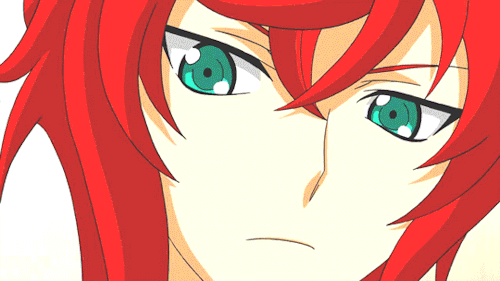
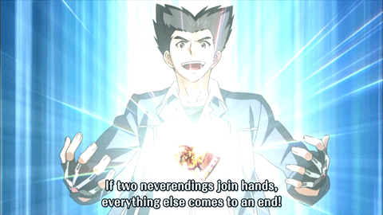

Dark Zone

Dark Irregulars
Their gameplay revolves around increasing the number of cards in their soul, and gaining advantages based on how large their soul is. As the number of cards in the soul is usually only important to the main bosses, while the rear-guards focus on getting cards into the soul. The power gained by obtaining cards into the soul is made greater due to the keyword "Darkness".
How to Play
The "Amon" archetype focus on quickly gathering a large soul to greatly power-up the vanguard while gaining advantages from having six or more cards in the soul. Amon is one of the oldest viable units within the game because the vanguard can reach 26000 power without boosting at the greatest of ease which is very important within this era of Cardfight Vanguard.
The "Blade Wing" archetype focus on having 15 or more cards in the soul in order to activate their abilities. As they do not utilize Limit Break, Legion, or Generation Break-associated restrictions, their powers are downward-adjusted to fit the lack of such prerequisites. This is the among the league of having the best late game pressure due to the fact of the vanguard always hitting with 3 criticals total before Drive Checks when at 15 cards in soul or more.

Spike Brothers "Play Style"
It is based on returning units to the deck and calling other units from the deck or hand to replace them, especially during the battle phase and often by putting cards from the hand into the soul, gaining an advantage with high-powered attacks. Then, as of G Technical Booster 1 "The Reckless Rampage", the keyword "Charge" is added, a state which forces rear-guards to return to the deck in exchange for greatly increasing their power or additional effects.
How to Play
The "Dudley" archetype focus on Soul Charging cards from your hand in order to superior call units from your deck. Because of the amount of soul accumulated from these effects, it is recommended to use Soul Blasting effects, like Highspeed, Brakki and Juggernaut Maximum to use the Dudleys at their fullest potential. This is best for early/mid-game pressure to kill your opponent before to stride due to their "Glass-Cannon" like tactics.
The "Rising Nova" archetype focus on pretty much the same thing as "Dudley" but this build is more of a mid/late game pressure due to the fact that it is a Stride-oriented build. They use the keyword "Charge" to gain devastating effects and power during battle.
NOTE: You NEED draw triggers in ANY Spike Brothers build to even stay alive.....